▲ 노을 무렵의 고석정 꽃밭. 2026년 하반기 운영은 8월 28일부터 10월 31일까지다 사진=철원군청
1. 의적이 숨었던 바위 앞에, 지금은 꽃이 핀다
철원 한탄강 협곡 한가운데 우뚝 솟은 15m 높이의 화강암 기둥, 그 이름이 고석(孤石)이다. 신라 진평왕과 고려 충숙왕이 이 바위 앞 정자에서 풍류를 즐겼다는 기록이 전하고, 조선시대에는 의적 임꺽정이 이 일대 바위굴에 숨어 관군을 피했다는 이야기로 더 유명해졌다. 6·25전쟁 때 불에 탄 정자는 이후 다시 세워졌고, 지금은 이 바위와 정자, 그리고 주변 협곡을 통틀어 '고석정'이라 부른다. 국가지정 명승이자 철원9경 중 하나다.
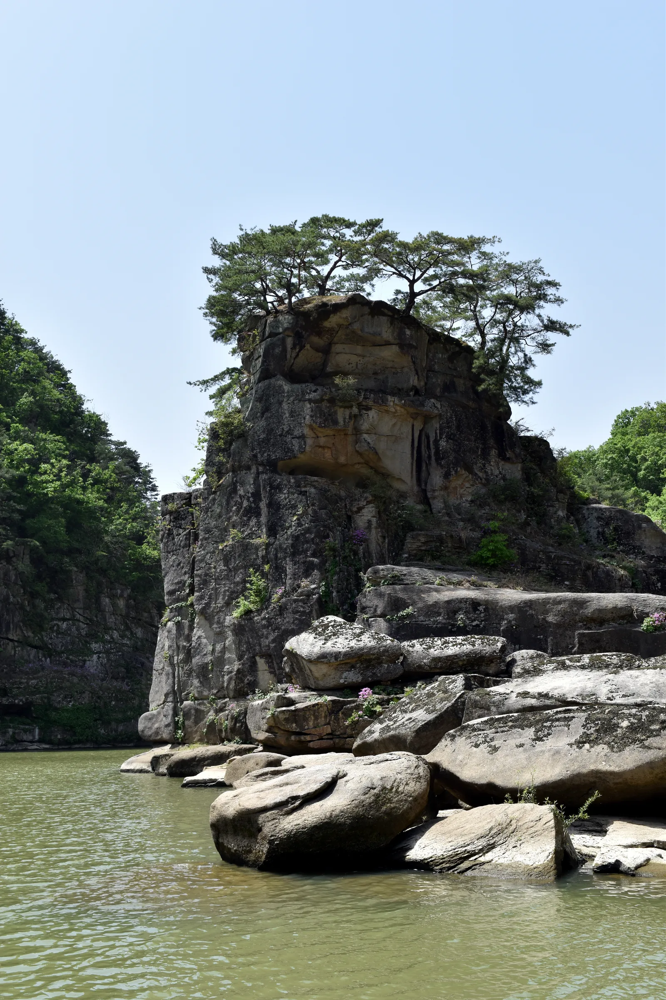
▲ 한탄강 수면 위로 솟은 고석. 정상에는 예로부터 정자가 있었다고 전해진다 사진=Wikimedia Commons (Jjw, CC BY-SA 3.0)
그리고 매년 늦여름부터 늦가을까지, 이 고석정 바로 옆에서는 또 다른 풍경이 펼쳐진다. 코스모스와 핑크뮬리, 천일홍이 뒤덮은 '고석정 꽃밭'이다. 2026년 하반기 운영 기간은 8월 28일부터 10월 31일까지로 철원군이 공식 확정했다.
2. 2026년 고석정 꽃밭 완전정리 — 일정·입장료·상품권 환급
고석정 꽃밭은 연 2회, 봄과 가을에 각각 다른 꽃으로 채워진다. 상반기는 유채꽃 계열, 하반기는 가을꽃 계열이 중심이다.
| 구분 | 기간 | 주요 꽃 | 비고 |
|---|---|---|---|
| 상반기 | 5월 15일~6월 14일(안내 기준) | 유채꽃, 양귀비, 수레국화 | 초화류 개화 상황에 따라 변동 가능 |
| 하반기 | 8월 28일~10월 31일(철원군 공식 확정) | 코스모스, 핑크뮬리, 천일홍, 코키아, 촛불맨드라미, 가우라, 버베나, 백일홍, 억새, 안젤로니아, 호박터널 | 매주 화요일 휴무 |
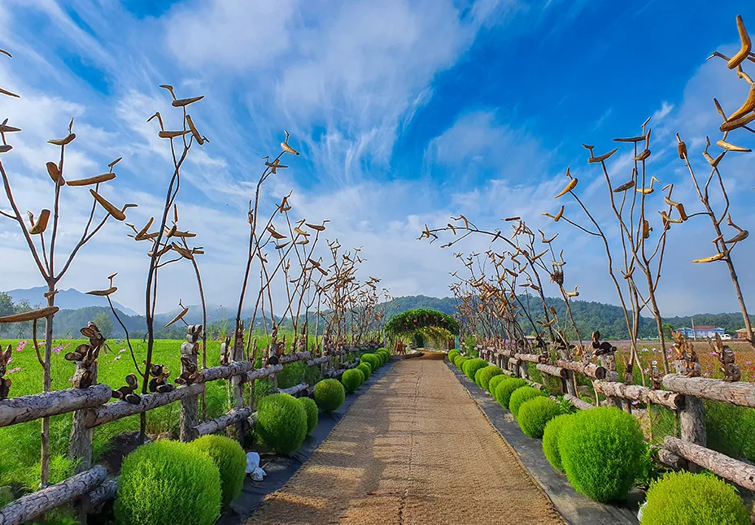
▲ 고석정 꽃밭 산책로. 계절마다 심는 꽃이 바뀐다 사진=철원군청
하반기 입장료는 대인 기준 1만 원이지만, 이 중 절반인 5천 원을 철원사랑상품권으로 즉시 돌려받는 구조다. 상품권은 꽃밭 내 먹거리부스나 철원 지역 가맹점에서 쓸 수 있어, 사실상 실질 부담은 5천 원 수준으로 줄어든다.
| 구분 | 입장료(개인) | 상품권 환급 | 실질 부담 |
|---|---|---|---|
| 대인 | 10,000원 | 5,000원 | 5,000원 |
| 소인 | 4,000원 | 2,000원 | 2,000원 |
| 감면대상 대인 | 5,000원 | 2,000원 | 3,000원 |
| 감면대상 소인 | 2,000원 | 1,000원 | 1,000원 |
| 철원군민 | 무료(신분증 지참 필수, 상품권 미교환) | ||
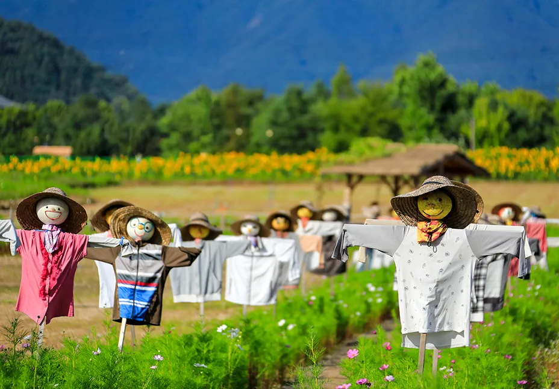
▲ 꽃밭 곳곳에 세워진 포토존용 허수아비 사진=철원군청
📍 아이와 함께라면
꽃밭 안에는 어린왕자와 여우 조형물 등 포토존이 곳곳에 있고, 깡통열차(약 1.2km)가 운행돼 아이들이 걷지 않고도 꽃밭을 둘러볼 수 있다. 15kg 미만 반려견은 리드줄 착용 시 동반 입장이 가능하다. 재입장은 되지 않으니 나갈 때는 더 볼 곳이 없는지 확인하는 게 좋다.
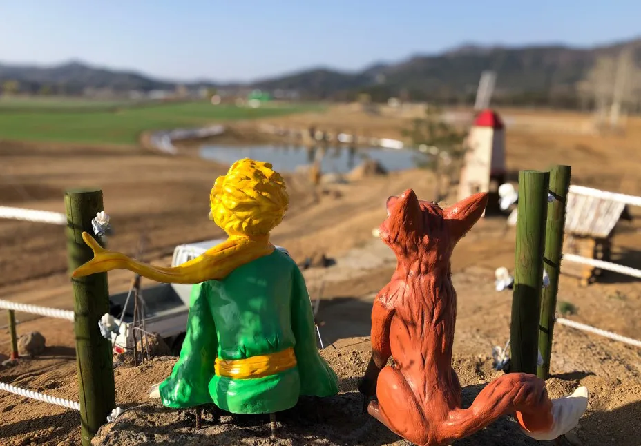
▲ 꽃밭 포토존 중 하나인 어린왕자·여우 조형물 사진=철원군청
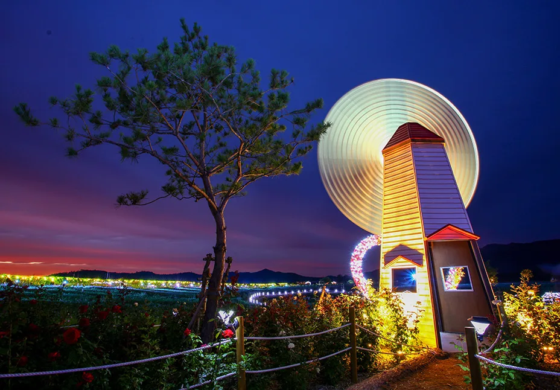
▲ 해 질 무렵 조명이 켜지는 꽃밭 포토존 사진=철원군청
3. 고석정 그 자체 — 화강암 기둥과 은빛 모래톱
고석정 일대는 한탄강 유네스코 세계지질공원의 핵심 지점 중 하나다. 약 27만 년 전 화산 폭발로 흘러내린 용암이 굳으며 현무암 협곡이 만들어졌는데, 고석은 특이하게도 이 현무암 협곡 안에 노출된 화강암 기둥이다. 현무암보다 오래된 화강암 지반이 침식에 깎여나가지 않고 그대로 남아 지금의 형태가 됐다. 정자 앞으로는 은빛 모래톱이 펼쳐지고, 협곡을 따라 기암괴석이 이어져 여러 영화·드라마 촬영지로도 쓰였다.
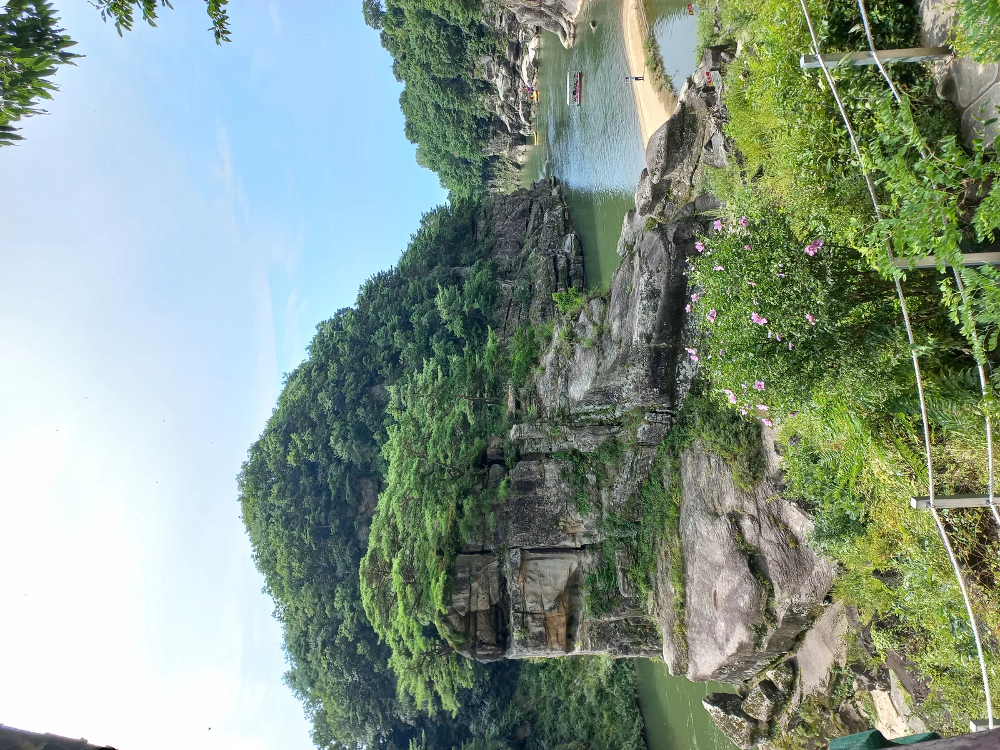
▲ 고석정 협곡. 한탄강이 굽이치는 지점에 고석이 솟아 있다 사진=Wikimedia Commons (Striker9498, CC BY-SA 3.0)
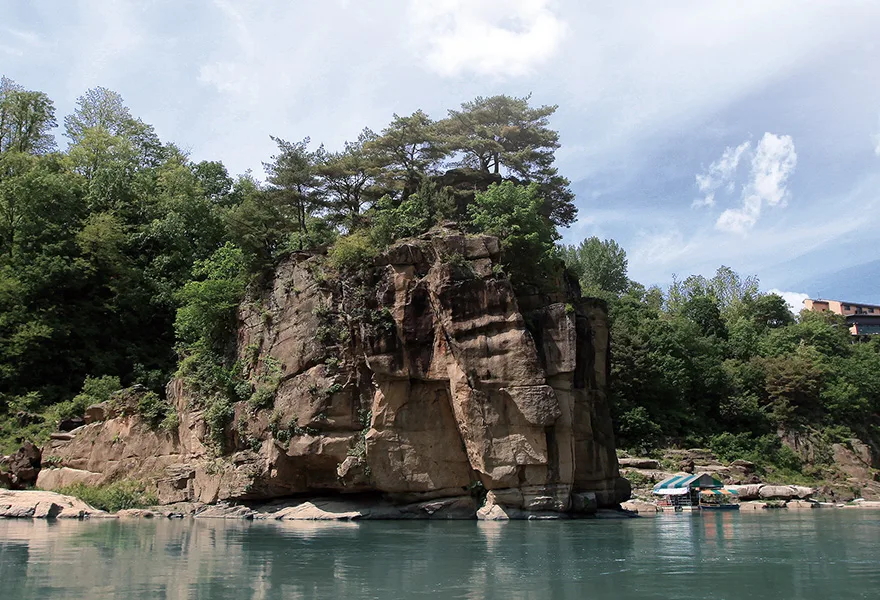
▲ 현무암 협곡(Basalt) 안에 노출된 화강암 고석(Goseok) 지반을 보여주는 지질 단면 사진=한탄강세계지질공원
📍 고석정 자체는 무료
고석정 정자와 전망대는 별도 입장료 없이 무료로 볼 수 있다. 꽃밭과 붙어 있어 꽃밭을 보고 나오는 길에 함께 들르기 좋다.
4. 순담계곡 주상절리길(잔도) — 절벽에 매달려 걷는 3.6km
고석정에서 멀지 않은 순담계곡에는 한탄강 절벽을 따라 잔도(棧道)를 놓은 철원한탄강 주상절리길이 있다. 총 연장 3.6km, 폭 1.5m로, 수면에서 20~30m 높이의 현무암 절벽에 매달린 다리를 따라 걷는 구조다. 발아래로 한탄강 물줄기가 그대로 내려다보여 스릴이 상당하다는 평이 많다.
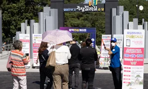
▲ 순담매표소 입구. 이곳에서 잔도 구간이 시작된다 사진=철원군청
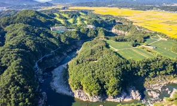
▲ 순담계곡 상공에서 내려다본 한탄강 협곡 사진=철원군청
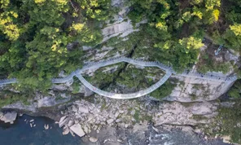
▲ 절벽과 허공 사이에 놓인 잔도 구간. 원형 전망 구간이 인상적이다 사진=철원군청
| 구분 | 내용 |
|---|---|
| 구간 | 총 연장 3.6km, 폭 1.5m, 전망쉼터 10곳 |
| 매표소 | 순담매표소(철원군 갈말읍 순담길 103) · 드르니매표소(철원군 갈말읍 드르니길 119-27) |
| 이용시간 | 하절기(3~11월) 09:00~16:00 / 동절기(12~2월) 09:00~15:00, 호우주의보 시 운영중단 |
| 휴무일 | 매주 화요일, 1월 1일, 설날·추석 당일 |
| 입장료 | 대인 10,000원(단체 8,000원) → 상품권 5,000원(단체 4,000원) 환급 / 소인 4,000원(단체 3,000원) → 상품권 2,000원(단체 1,000원) 환급 |
| 부대시설 | 주차장, 화장실 |
고석정 꽃밭과 주상절리길은 모두 매주 화요일 휴무인 데다 같은 방식의 철원사랑상품권 환급 제도를 운영한다. 두 곳을 하루에 묶어 방문할 계획이라면 화요일만 피하면 된다. 자세한 최신 운영 정보는 철원군청 관광 홈페이지에서 확인 가능하다.
5. 드라이브 코스 제안 — 순담에서 직탕폭포까지
서울·수도권에서는 세종포천고속도로를 타고 신북IC에서 빠져나와 43번 국도를 따라가면 약 1시간 30분~2시간이면 철원 동송읍 일대에 닿는다. 도착 후에는 순담계곡~고석정~승일교~직탕폭포를 잇는 코스가 대표적이다.
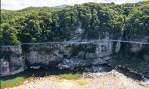
▲ 순담계곡 일대 협곡 항공사진 사진=철원군청
| 지점 | 특징 |
|---|---|
| 순담계곡·주상절리길 | 잔도 트레킹의 시작점, 매표소·주차장 구비 |
| 고석정·고석정 꽃밭 | 순담에서 가까운 거리, 무료 정자·유료 꽃밭 |
| 승일교 | 남북이 각각 절반씩 나눠 지은 한탄강 최초의 콘크리트 다리. 남측은 각진 사각 교각, 북측은 아치형으로 확연히 다르다. 현재는 차량 통행 없이 도보로만 건널 수 있다 |
| 직탕폭포 | 폭 80m, 낙차 3m 안팎으로 옆으로 길게 물이 떨어져 '한국의 나이아가라'로 불린다 |
| 은하수교·한탄강 물윗길 | 겨울철(11~3월)에만 개방되는 부교 트레킹 코스, 직탕폭포~순담계곡 약 8.5km |
📍 앞으로 더 가까워진다
포천 산정호수와 철원 고석정을 잇는 도로 공사가 진행 중이다. 완공되면 현재 30~40분 걸리는 두 지점 간 이동 시간이 약 10분으로 줄어들 전망이다. 철원 구간 1차 구간은 2026년 말 완공 목표로, 완전 개통 시 산정호수·명성산과 한탄강·고석정을 하루 코스로 묶는 순환 드라이브가 한결 수월해질 것으로 보인다.
6. 겨울엔 여기 — 한탄강 얼음트레킹 축제
고석정·순담계곡을 가을에 다녀왔다면, 겨울에 다시 찾아볼 이유도 있다. 승일교 하단 한탄강 일원에서 열리는 철원 한탄강 얼음트레킹 축제는 얼어붙은 강 위를 직접 걸으며 주상절리 협곡을 가까이서 볼 수 있는 겨울 축제로, 2026년으로 14회째를 맞는다.
✅ 2026년 한탄강 얼음트레킹 일정
· 메인 기간: 2026년 1월 17일~1월 25일(전체 운영은 기상 여건에 따라 2025년 12월 중순부터 2026년 3월 초까지)
· 운영시간: 09:00~17:00, 입장마감 16:00
· 휴무일: 매주 화요일
· 입장료: 대인 10,000원 / 소인 4,000원
· 문화체육관광부 2026~2027 문화관광축제로 재선정
이 시기에는 한탄강 물 위에 부교를 놓은 '물윗길'도 함께 열린다. 직탕폭포에서 순담계곡까지 약 8.5km 구간을 물 위로 걸을 수 있는 코스로, 얼음트레킹과 짝지어 즐기는 이들이 많다.
7. 주차·실전 체크리스트
▲ 순담계곡 주차장. 성수기 주말에는 일찍 채워질 수 있다 사진=철원군청
✅ 출발 전 확인할 것
· 고석정 꽃밭 주차는 무료, 재입장은 불가하니 관람 순서를 미리 정해둘 것
· 주상절리길은 순담매표소·드르니매표소 두 곳 모두 주차장·화장실 구비
· 고석정 꽃밭과 주상절리길 모두 매주 화요일 휴무 — 요일이 겹치지 않는지 반드시 확인
· 상품권은 철원 지역 내 가맹점에서만 사용 가능, 현장에서 소비 계획을 세울 것
· 반려견 동반은 꽃밭 기준 15kg 미만·리드줄 착용 조건부 허용
고석정 꽃밭 최신 개장 현황과 상세 안내는 철원군청 관광 홈페이지에서 확인 가능하며, 축제성 행사 일정은 철원문화재단 홈페이지에서도 함께 확인할 수 있다.